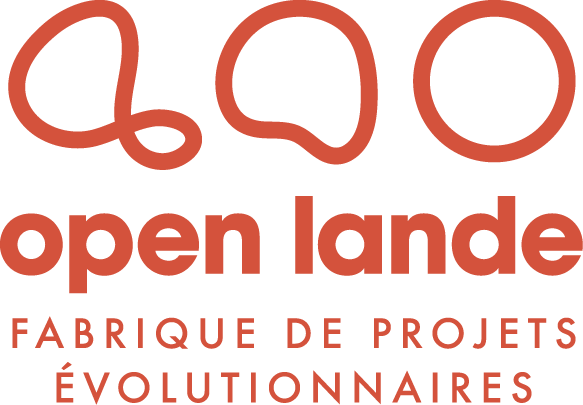

2 minutes, 12 questions. Vous obtenez tout de suite un score de maturité sur 7 axes, vos alertes prioritaires et une estimation du coût réel de votre eau.
Nous croisons vos réponses avec les bases de l'État sur votre site : restrictions sécheresse en vigueur, prélèvements d'eau déclarés, installation classée, risques de la commune. Vous recevez votre rapport sous 48 heures.
Recevoir mon Aqua-Scan complet (1 minute) →Ensuite, si vous le souhaitez : un diagnostic eau de votre site avec Pascale Guiffant (Open Lande). Programme pilote ouvert à 5 sites industriels. pascale@openlande.co